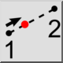
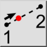
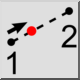
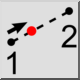

Odległość ręcznie
Pasek narzędziowy / ikona:
 

Menu: Przyciąganie > Odległość ręcznie
Skrót: S, H
Polecenia: snapdistancemanual | sh
Jest to tłumaczenie automatyczne.
Pasek narzędziowy / ikona:
 

Menu: Przyciąganie > Odległość ręcznie
Skrót: S, H
Polecenia: snapdistancemanual | sh
Narzędzie to pozwala na wykonanie zdjęcia do punktu, który leży na
wyimaginowanej linii pomiędzy dwoma punktami w danej odległości od pierwszego
punktu.
To narzędzie nie ogranicza wprowadzonej odległości, procentu lub ułamka.
Wprowadzenie odległości większej niż odległość między dwoma punktami, procent
większy niż 100 lub ułamek większy niż 1,0 pozwoli Ci na przesunięcie się do
punktu poza drugi punkt.
Negatywne wartości mogą być wprowadzane w celu przyciągnięcia do punktów
znajdujących się poza pierwszym punktem.
Frakcje mogą być wprowadzane jako liczby dziesiętne (0,5, 0,7) lub jako
ułamki (1/7, 3/11).